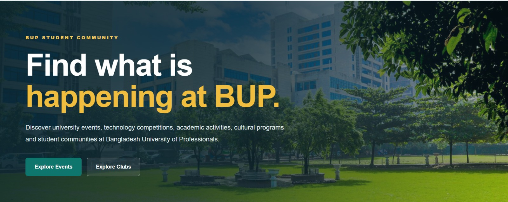
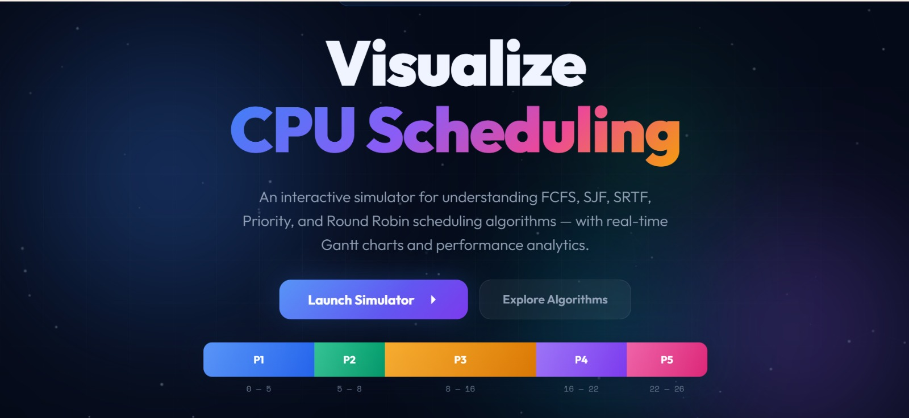
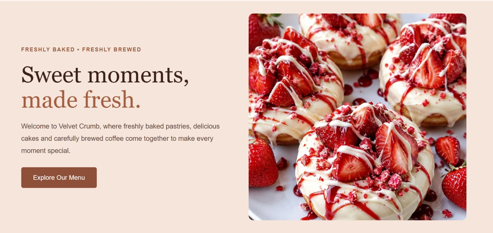

Selected work.
Projects developed through academic work, personal practice and hands-on exploration.

BUP Events
A student-focused event management web interface designed to help BUP students discover and explore campus events.
View Live Project →
CPU Scheduling Simulator
An interactive web simulator for FCFS, SJF, SRTF, Priority and Round Robin scheduling algorithms with Gantt charts and performance metrics.
View Live Project →
Velvet Crumb
A responsive bakery and café website with an elegant interface, menu display and smooth navigation.
View Live Project →BUP Alumni
Networking Platform
Currently in development
BUP Alumni Networking Platform
A networking platform designed to connect BUP students and alumni while supporting communication, professional networking and community engagement.
BUP
MarketSphere
Currently in development
BUP MarketSphere
A campus marketplace concept designed to connect BUP students, student sellers, delivery riders and service providers through a centralized platform.